Ohne Frage leben wir in einer Welt, umgeben von Plastik. Wer genauer hinsieht, stellt fest, dass das Plastik nicht nur unsere komplette Umwelt durchdrungen hat, sondern auch unsere Körper.
Hautkontakt
Atmung
Verzehr
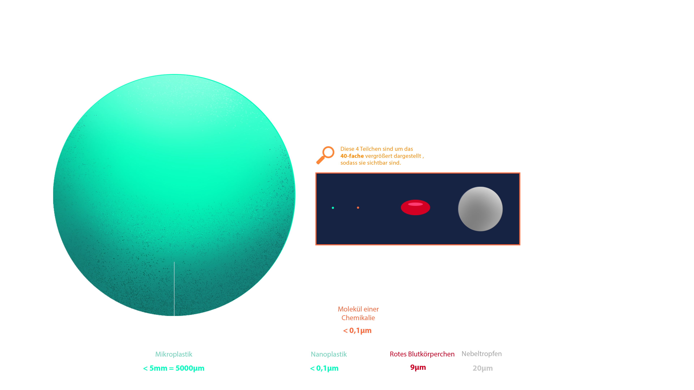
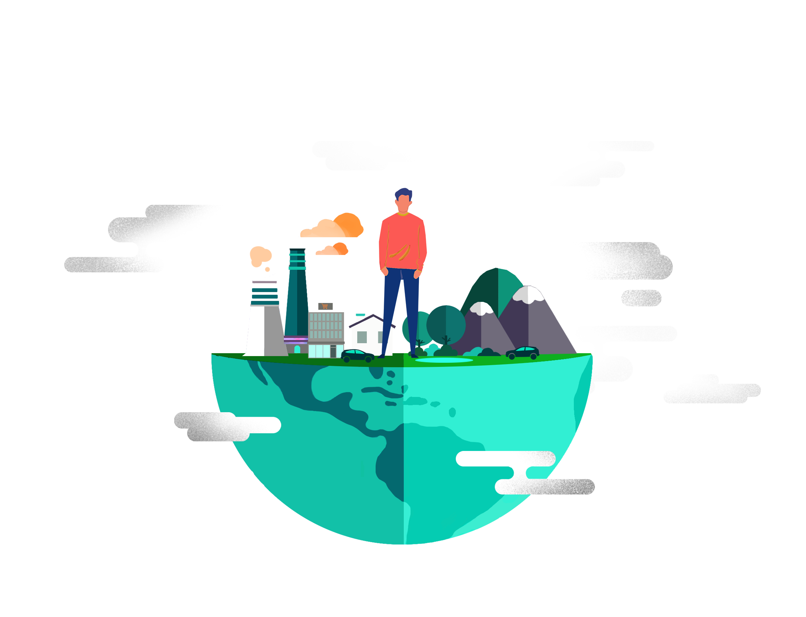
Hautkontakt
Atmung
Verzehr
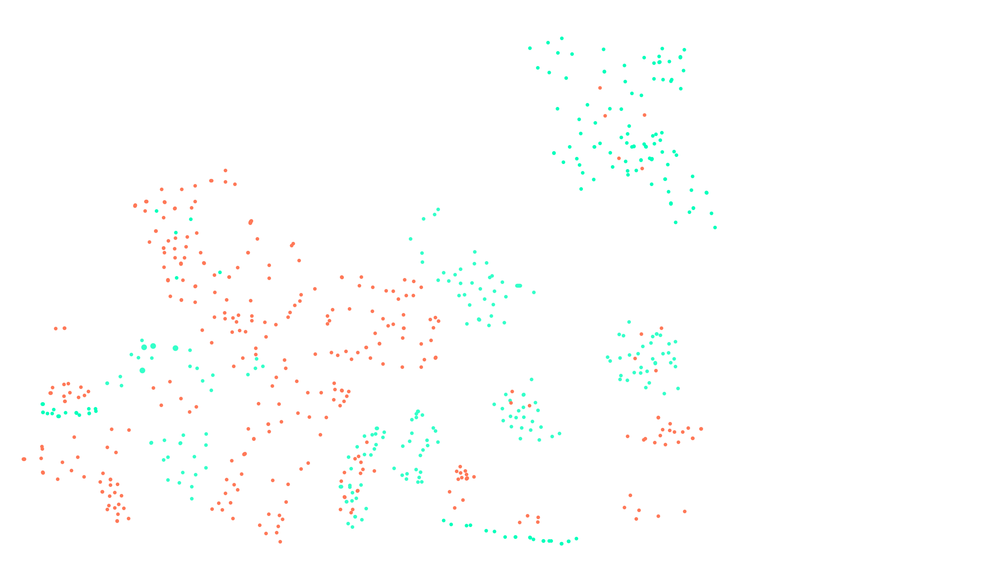
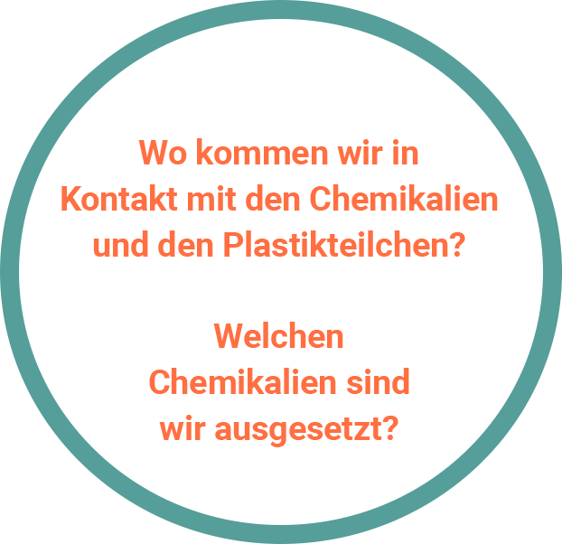
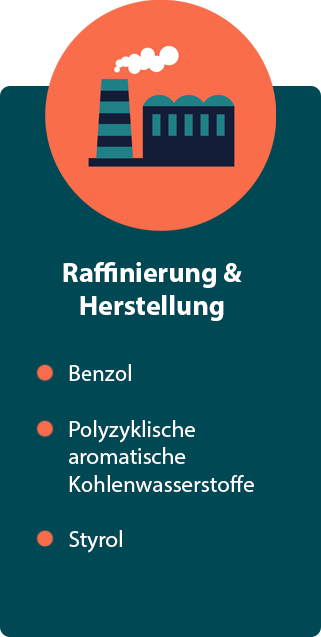
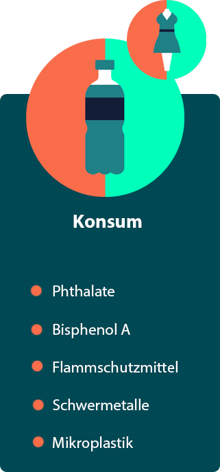
Direkter Kontakt
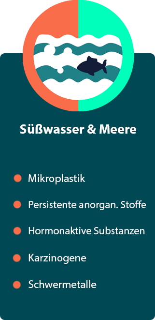
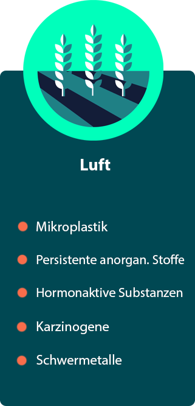
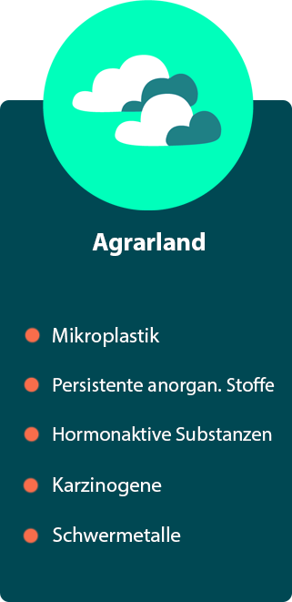
Indirekter Kontakt
Was passiert, wenn Schadstoffe in unserem Körper sind?
Sieh Dir die Auswirkungen einzelner Schadstoffe an und lass Dir die dazugehörigen Plastikartikel anzeigen:
Bisphenol A (kurz: BPA) ist Ausgangsstoff für die Herstellung verschiedener Kunststoffe (PC, Epoxidharze). Das BPA ist in diesem Fall chemisch gebunden und löst sich nur unter extremen Umständen heraus. Es kommt jedoch vor, dass bei den Herstellungsprozessen nicht das komplette Bisphenol A chemisch umgewandelt wird. Daher können Produkte aus diesen Materialien noch freie Bisphenol A-Reste enthalten.
Bisphenol A findet auch Verwendung als Additiv. Hier wird BPA als Stabilisator (für die Haltbarkeit / längere Lebensdauer des Kunststoffs) oder als Farbenwicklungskomponente verwendet. BPA ist in diesem Fall chemisch nicht gebunden und daher leicht herauslösbar.
Wir nehmen Bisphenol A vor allem über Lebensmittel und Thermopapier auf. Bisphenol A kann durch heißes sowie kaltes Wasser herausgelöst werden (Hydrolyse). Wasch- und Spülmittel verstärkt das Herauslösen von BPA.
BPA steht in der Europäischen Union auch auf der Liste der gefährlichsten Chemikalien. Grundsätzlich verboten ist BPA jedoch nicht.
Flammschutzmittel sind chemische Verbindungen, die den Flammpunkt eines Materials verändern können.
Es gibt gebundene und ungebundene Flammschutzmittel, letztere können sich leicht aus Produkten lösen.
Der größte Anwendungsbereich für Flammschutzmittel sind Elektronische Geräte; direkt danach kommt das Bauwesen.
Flammschutzmittel finden sich in hoher Konzentration im Klärschlamm von Wasseraufbereitungsanlagen.
Dieser Schlamm wird entweder zum Düngen von Feldern verwendet oder verbrannt, wo er giftige Gase freisetzt.
Der Mensch kommt sowohl mit den Schadstoffen in der Luft, als auch mit den Produkten der gedüngten Felder in Kontakt.
Phthalate sind Industriechemikalien, die vor allem als Weichmacher für Kunststoffe Verwendung finden. Ohne sie wäre dieser Kunststoff viel zu hart und brüchig für viele Anwendungen.
Da die Phthalate als Weichmacher nicht chemisch an den Kunststoff gebunden sind, können sie bei Kontakt mit dem Körper durch das Fett in der Haut, durch Schweiß oder durch Speichel gelöst werden und so in den Körper gelangen.
Aufgrund der lipophilen (fettliebenden) Eigenschaften von Phthalaten, ist es auch möglich, die Weichmacher über fetthaltige Nahrungsmittel (z.B. Speiseöl), die Kontakt zu dem Kunststoff hatten, zu sich zu nehmen.
Ferner gasen Phthalate aus weichgemachten Kunststoffen aus und belasten so die Innenraumluft – besonders relevant bei großflächigen Produkten wie Kunststofftapeten oder Bodenbelägen.
Wir nehmen die Weichmacher vor allem über die Luft und die Nahrung auf. Fast bei jedem sind Phthalate oder ihre Abbauprodukte (Metabolite) im Blut und/oder im Urin nachweisbar.
Schwermetalle werden als Zusatzstoffe für Plastikprodukte verwendet, um die Eigenschaften des Kunststoffs zu verändern und zu verbessern. Sie werden als Hitze- und UV-Stabilisatoren, als anorganische Flammschutzmittel und als Farbpigmente verwendet.
Unter Schwermetalle fallen alle Metalle mit einer Dichte über 5 g pro Kubikzentimeter.
Schwermetalle kommen natürlich in der Umwelt vor.
Einige von Ihnen sind lebensnotwendig (Eisen, Zink), andere dagegen hochgiftig (Blei, Cadmium oder Quecksilber).
Studien haben gezeigt, dass Kunststoffverbindungen freie Schwermetalle aufnehmen können. In einem Versuch wurde nachgewiesen, dass PVC freigewordenes Zink und Kupfer aus Meerwasser aufgenommen hat.
Diese Tatsache führt dazu, dass Mikroplastik in der Umwelt vorhandene Schwermetalle aufnehmen kann und in somit in die Nahrungskette von Fischen und schließlich Menschen gelangt.
Einleitung: Plastic Strategy A European Strategy for Plastics in a Circular Economy. [(accessed on 3 December 2019)]; Communication from the Commission to the European Parliament, the Council, the European Economic and Social Committee and the Committee of the Regions. Brussels, January 16th 2018 COM (2018) Available online: https://ec.europa.eu/environment/circular-economy/pdf/plastics-strategy.pdf.
Was macht Plastik so gefährlich?: Roscam A.M. Plastic Soup: An Atlas of Ocean Pollution. Island Press; Washington, DC, USA: Covelo, CA, USA: London, OH, USA: 2019. ISBN-10: 1642830089 Titel anhand dieser ISBN in Citavi-Projekt übernehmen . [Google Scholar]
Größenvergleich: Wagner M., Lambert S. The Handbook of Environmental Chemistry. Volume 58 Springer Open; Cham, Switzerland: 2018. Freshwater microplastics. Emerging environmental contaminants? [Google Scholar]
Kontakt Arten & Stoffen: Zalasiewicz J., Waters C.N., Do Sul I.J.A., Corcoran P.L., Barnosky A.D., Cearreta A., Edgeworth M., Gałuszka A., Jeandel C., Leinfelder R., et al. The geological cycle of plastics and their use as a stratigraphic indicator of the Anthropocene. Anthropocene. 2016;13:4–17. doi: 10.1016/j.ancene.2016.01.002 Titel anhand dieser DOI in Citavi-Projekt übernehmen
Anschauliche Kontakte: Roscam A.M. Plastic Soup: An Atlas of Ocean Pollution. Island Press; Washington, DC, USA: Covelo, CA, USA: London, OH, USA: 2019. ISBN-10: 1642830089 Titel anhand dieser ISBN in Citavi-Projekt übernehmen . [Google Scholar]
Auswirkungen & Produkte: Wagner M., Lambert S. The Handbook of Environmental Chemistry. Volume 58 Springer Open; Cham, Switzerland: 2018. Freshwater microplastics. Emerging environmental contaminants? [Google Scholar]
Fazit: Zalasiewicz J., Waters C.N., Do Sul I.J.A., Corcoran P.L., Barnosky A.D., Cearreta A., Edgeworth M., Gałuszka A., Jeandel C., Leinfelder R., et al. The geological cycle of plastics and their use as a stratigraphic indicator of the Anthropocene. Anthropocene. 2016;13:4–17. doi: 10.1016/j.ancene.2016.01.002 Titel anhand dieser DOI in Citavi-Projekt übernehmen


 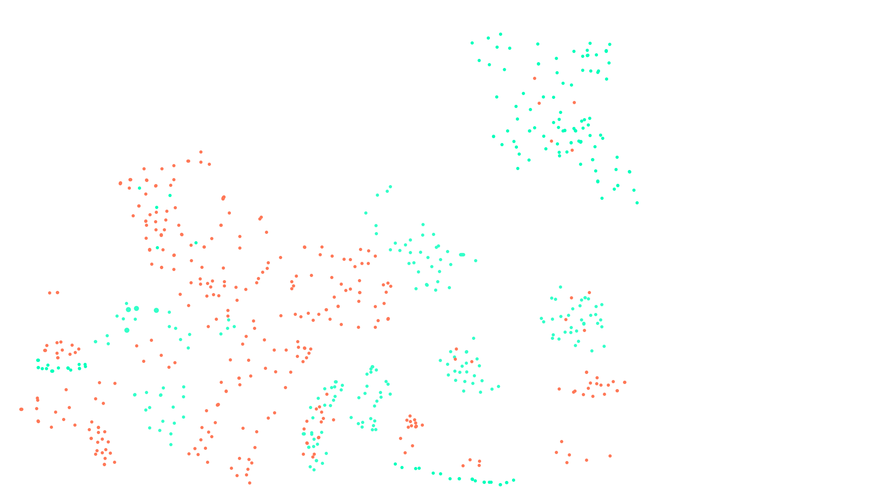
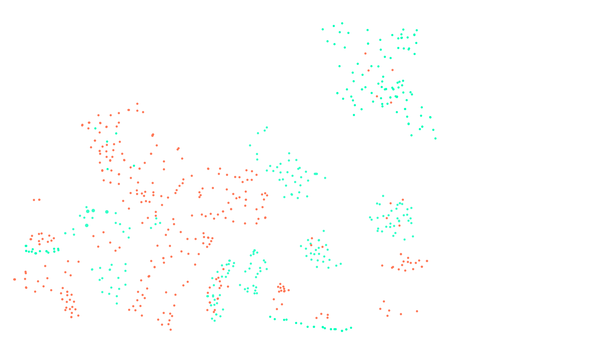